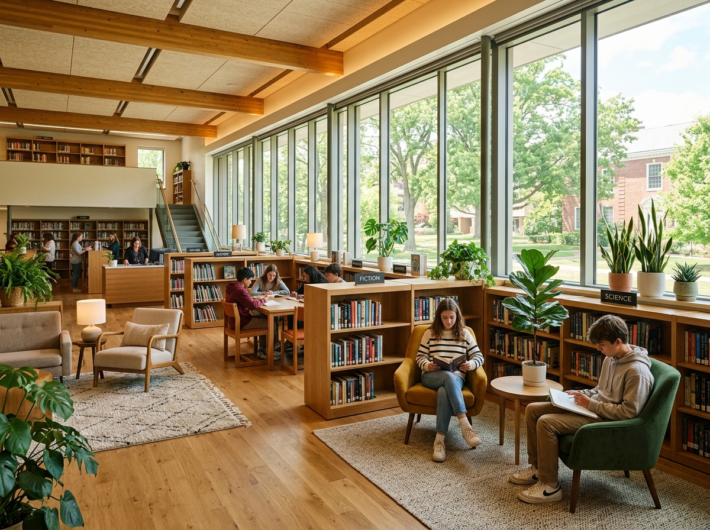
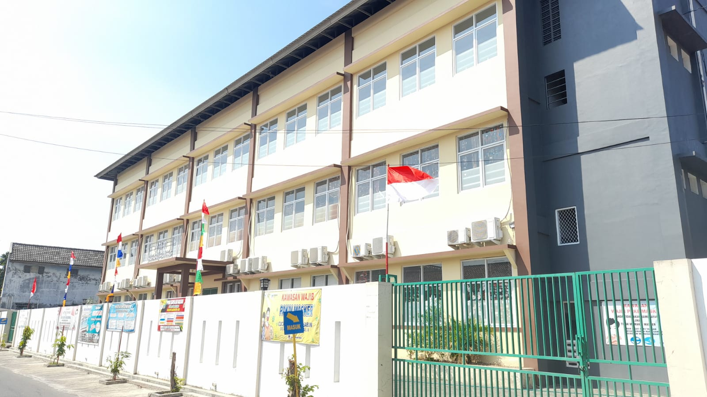
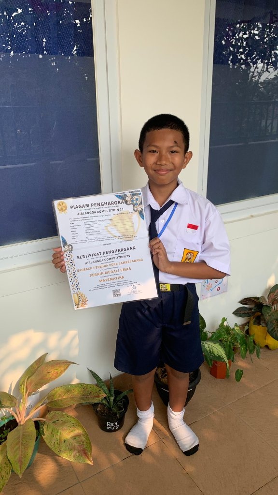
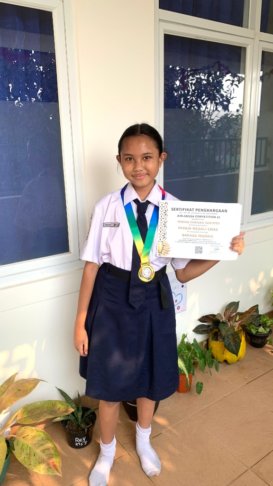

MEMBENTUK GENERASI BERKARAKTER KASIH
Mengenal SMP Harapan Bangsa Karawang
Sekolah Menengah Pertama yang mengintegrasikan penguatan karakter berbudi luhur, daya nalar analitis, dan kesiapan siswa melangkah ke jenjang pendidikan menengah atas.
Melalui rasio pendidik dan peserta didik yang terjaga secara ideal (maksimal 30 murid per rombel), bapak dan ibu guru dapat memberikan pendampingan akademik personal, mendeteksi bakat unik setiap siswa, serta membimbing penyelesaian kesulitan belajar secara menyeluruh.
Karakter Kasih & Disiplin
Pembiasaan tata krama, adab kepada sesama, penanaman toleransi, dan komitmen sekolah bebas perundungan (anti-bullying).
Nalar Analitis & Riset STEM
Pembelajaran berbasis masalah (Problem-Based Learning) serta praktikum aktif sains, matematika terapan, dan pengenalan teknologi.
Pendampingan Remaja & BK
Layanan bimbingan konseling intensif yang membimbing dinamika emosional remaja dan memetakan peminatan studi lanjut.
Kepemimpinan OSIS & Organisasi
Melatih kepemimpinan rapat, manajemen kegiatan, kepramukaan penggalang, serta kemampuan berbicara di depan umum.
Identitas Resmi Satuan Pendidikan
| Nama Sekolah | SMP Harapan Bangsa |
|---|---|
| NPSN | 70062135 (Kementerian Pendidikan, Kebudayaan, Riset, dan Teknologi) |
| Kepala Sekolah | Juliana Ruth Mathilda Hutapea, S.Th. |
| Tingkat Kelas | Kelas 7, Kelas 8, dan Kelas 9 |
| Kurikulum | Kurikulum Merdeka Menengah |
| Waktu Belajar | Senin s.d. Jumat (07.00 - 14.50 WIB) |
| Alamat Kampus | Jln. R.E Martadinata No. 8, RT 02/RW 05, Kel. Adiarsa Barat, Kec. Karawang Barat, Kab. Karawang 41311 |
| Telepon Kantor TU | (0267) 8407123 |
| Layanan PPDB | WhatsApp: 0823 1177 5434 (Ibu Diana) |
| Email Resmi | smpharapanbangsa949@gmail.com |
Visi dan Misi SMP Harapan Bangsa
Prinsip pemandu seluruh proses belajar mengajar, pembinaan budi pekerti, dan pengembangan potensi peserta didik.
Visi SMP Harapan Bangsa
Menyiapkan lulusan berdaya saing akademik tinggi yang memiliki integritas moral kokoh dalam menyongsong tantangan zaman.
Misi SMP Harapan Bangsa
Kurikulum & Pendekatan Edukasi SMP
Kurikulum Merdeka Menengah yang dipadukan dengan pembelajaran mendalam (Deeper Learning) berbasis proyek dan penguatan wawasan global.
Pembelajaran Analitis & STEM
Penerapan metode investigasi ilmiah, pembelajaran berbasis masalah (PBL), dan proyek kolaboratif lintas mata pelajaran sains, matematika, serta rekayasa sederhana.
Literasi Digital & TIK
Praktikum komputer berkala di laboratorium, etika bermedia digital, pengolahan data dokumen, pengenalan logika pemrograman (coding), dan kesiapan asesmen berbasis komputer.
Pengayaan Dwibahasa
Penguatan kemampuan komunikasi Bahasa Inggris terapan serta pembelajaran dasar Bahasa Mandarin guna memperluas wawasan pergaulan lintas bahasa sejak bangku SMP.
6 Program Pembelajaran Unggulan SMP Harapan Bangsa
Mempersiapkan lulusan yang mandiri, berbudi luhur, dan siap melanjutkan ke jenjang SMA atau SMK favorit.
Pendampingan Riset & Praktikum Sains
Membimbing peserta didik melakukan observasi biologi, fisika, dan kimia dasar menggunakan alat peraga laboratorium sekolah.
Organisasi Siswa Intra Sekolah (OSIS)
Melatih manajemen waktu, kepemimpinan rapat, kerjasama tim kerja, dan kemampuan public speaking di depan umum.
Pramuka Penggalang & Kepedulian Sosial
Menumbuhkan kesetiakawanan, ketahanan fisik di alam terbuka, kecintaan tanah air, serta kegiatan bakti sosial berkala.
Klub Minat Olahraga & Seni Budaya
Penyaluran minat futsal, basket, badminton, paduan suara, kriya desain, dan seni pertunjukan.
Bimbingan Prestasi Kompetisi Akademik
Pendampingan intensif bagi siswa berbakat dalam mengikuti olimpiade sains, matematika, dan kejuaraan bahasa tingkat nasional.
Pembinaan Karakter Kasih & Bimbingan Konseling
Pendampingan transisi emosional remaja secara suportif dan pembentukan pribadi yang menghargai keberagaman.
Dewan Guru & Staf SMP Harapan Bangsa
Para pendidik berdedikasi yang siap membimbing peserta didik dalam proses pembelajaran akademik dan pendampingan karakter harian.

Kepala Sekolah & Dewan Guru SMP Harapan Bangsa Karawang
Kepala Sekolah Ibu Juliana Ruth Mathilda Hutapea, S.Th. bersama segenap dewan guru profesional berkomitmen mendampingi tumbuh kembang intelektual, emosional, dan budi pekerti peserta didik dalam suasana belajar yang ramah dan inspiratif.
Juliana Ruth Mathilda Hutapea, S.Th.
Kepala Sekolah & Guru Pendidikan Agama Kristen / Bimbingan Pribadi
Farida Donna Gultom, S.Pd.
Wali Kelas 7, Guru Bahasa Inggris, dan Pembina Seni Tari
Sepania Siahaan, S.Pd.
Guru Matematika & Ilmu Pengetahuan Alam (IPA)
Sri Rahayu, S.IP.
Guru Pengayaan Bahasa Mandarin
Melva Saragih, S.Pd.
Guru Bahasa Indonesia & Pembina Seni Teater
Robertus Hadi Wijaya, S.Pd., Gr.
Guru Ilmu Pengetahuan Sosial (IPS) & Informatika (TIK)
Difa Ganda Limbong, S.Pd.
Guru Pendidikan Pancasila (PPKn) & Seni Musik
Chorry Seviana Amung, S.Pd., Gr., M.Pd.
Guru PJOK (Pendidikan Jasmani) & Bahasa Sunda
Nilai Keunggulan SMP Harapan Bangsa
Standar pembelajaran terencana yang memastikan setiap murid mendapatkan perhatian belajar optimal.
Karakter Kasih & Budaya Positif
Pembiasaan saat teduh, ibadah rutin hari Kamis, adab santun, serta pembinaan kedisiplinan berkarakter kasih yang membentuk pribadi berbudi pekerti luhur.
Rasio Kelas Ideal
Jumlah siswa per kelas dibatasi maksimal 30 murid sehingga guru dapat mengenal karakter belajar dan mendampingi kemajuan setiap peserta didik secara personal.
Deeper Learning & Coding
Metode pembelajaran berbasis masalah (PBL) dan proyek kolaboratif yang terintegrasi dengan pengenalan logika pemrograman komputer dan literasi digital sehat.
11 Ekstrakurikuler Pilihan
Wadah pengembangan minat di bidang olahraga (futsal, basket, badminton, renang), sains, bahasa Inggris, musik band, vocal, tari, teater, hingga coding.
Fasilitas Nyaman & Terstandar
Ruang kelas ber-AC dengan TV layar lebar interaktif, laboratorium komputer, laboratorium IPA, perpustakaan, lapangan olahraga luas, dan aula pertemuan.
Prestasi Terbukti Tingkat Nasional
Rekam jejak capaian siswa yang membanggakan, termasuk perolehan 4 medali emas pada kompetisi akademik tingkat nasional di berbagai mata pelajaran.
Fasilitas SMP Harapan Bangsa
Sarana dan prasarana belajar yang dirancang untuk mendukung kenyamanan, eksplorasi sains, dan kegiatan siswa di lingkungan kampus.
 Ruang Kelas
Ruang Kelas
Ruang Kelas Ber-AC & Multimedia
Dilengkapi penyejuk udara (AC), Smart TV layar besar untuk presentasi interaktif, whiteboard, dan ventilasi udara yang baik.

PerpustakaanPerpustakaan Sekolah
Koleksi buku teks Kurikulum Merdeka, ensiklopedia ilmiah, novel sastra remaja, serta ruang baca yang tenang untuk literasi harian.
 Olahraga
Olahraga
Lapangan Olahraga Luas
Area luar ruang multifungsi untuk kegiatan upacara bendera hari Senin, latihan futsal, bola basket, badminton, dan kebugaran fisik.

TeknologiLaboratorium Komputer & TIK
Fasilitas perangkat komputer terhubung internet untuk praktikum informatika, logika pemrograman, dan pelaksanaan ANBK.
Ruang UKS (Unit Kesehatan Siswa)
Penyediaan perlengkapan medis pertolongan pertama, tempat istirahat siswa, dan pemantauan kesehatan berkala warga sekolah.
Kantin Bersih & Sehat
Menyediakan menu makanan dan minuman higienis, bergizi seimbang, dan diawasi kebersihannya untuk seluruh peserta didik.
 Serbaguna
Serbaguna
Aula Pertemuan Serbaguna
Gedung pertemuan untuk kegiatan ibadah bersama hari Kamis, pertemuan orang tua murid, seminar kesiswaan, dan pentas unjuk seni.
Ruang Tunggu & Informasi PPDB
Area pelayanan tamu dan penjemput yang tertib dan nyaman selama jam kunjungan atau menantikan kepulangan siswa.
Kesiswaan & Ekstrakurikuler SMP
Pengembangan karakter mandiri, kepemimpinan organisasi, serta wadah eksplorasi minat bakat di luar jam kegiatan belajar mengajar.
Deeper Learning & Coding
Pembelajaran mendalam berbasis masalah (PBL) dan proyek nyata, didukung pengenalan logika coding dan literasi digital di laboratorium komputer.
11 Ekstrakurikuler Aktif
Klub Bahasa Inggris, Matematika, Basket, Badminton, Futsal, Vocal, Tamborin, Renang, Dance, Musik Band, dan Coding untuk mengasah talenta siswa.
Saat Teduh & Ibadah Rutin
Saat Teduh harian di kelas sebelum jam pelajaran dimulai, ibadah bersama setiap hari Kamis, serta perayaan hari besar keagamaan Paskah dan Natal.
Musik, Band, Tari & Teater
Pembinaan talenta seni musik instrumental, olah vocal, modern/traditional dance, dan teater untuk melatih rasa percaya diri dan estetika.
Klub Olahraga (Futsal & Basket)
Pembinaan cabang olahraga basket, futsal, bulutangkis, dan renang di lapangan sekolah untuk membangun kebugaran fisik dan sportivitas.
OSIS, Pramuka & Bakti Sosial
Organisasi Siswa Intra Sekolah (OSIS), kepramukaan penggalang, upacara bendera hari Senin, gerakan peduli lingkungan, dan aksi sosial berkala.
Prestasi Siswa SMP Harapan Bangsa
Capaian kejuaraan nyata yang diraih oleh peserta didik SMP Harapan Bangsa Karawang pada ajang kompetisi tingkat regional dan nasional.

Sadrakh Perwira Bore Sampepadang
Peraih Medali Emas Matematika Jenjang SMP pada ajang bergengsi Airlangga Competition 21 tingkat nasional, membuktikan ketajaman logika berpikir dan penalaran numerasi peserta didik SMP Harapan Bangsa.

Yemima Chrisna Santoso
Peraih Medali Emas Bahasa Inggris Jenjang SMP pada ajang bergengsi Airlangga Competition 21 tingkat nasional, menunjukkan keunggulan literasi bahasa dan komunikasi global yang dibina di SMP Harapan Bangsa.
Airlangga Competition 21 (SMP)
Meraih 4 Medali Emas: Sadrakh (Matematika), Yemima (Bahasa Inggris), Clarissa (PPKn), dan Hana Michell (Bahasa Indonesia).
Olimpiade Sains & Numerasi Menengah
Partisipasi aktif dan perolehan penghargaan pada kompetisi nalar sains serta kecakapan logika matematika antarsekolah menengah.
Kejuaraan Seni Pertunjukan & Olahraga Beregu
Meraih apresiasi dalam ajang unjuk bakat seni pentas tari dan pertandingan persahabatan olahraga antarpelajar di Kabupaten Karawang.
Penerimaan Peserta Didik Baru (SPMB SMP)
Pendaftaran peserta didik baru jenjang SMP Harapan Bangsa Karawang dibuka untuk lulusan SD/MI sederajat.
Pengisian Formulir Online
Orang tua atau calon siswa mengisi formulir pendaftaran melalui Google Form resmi sekolah atau konsultasi via WhatsApp layanan PPDB.
Kelengkapan Berkas Administrasi
Menyerahkan dokumen pendukung: Fotokopi Rapor SD, Akta Kelahiran, Kartu Keluarga (KK), dan Fotokopi KTP orang tua.
Verifikasi & Pemetaan Minat
Observasi ramah dan pemetaan potensi minat bakat siswa serta konsultasi rincian biaya pendidikan secara transparan.
Registrasi Ulang & Perlengkapan
Penyelesaian administrasi registrasi ulang, pengukuran seragam sekolah, dan persiapan Masa Pengenalan Lingkungan Sekolah (MPLS).
📋 Syarat Berkas Pendaftaran Siswa Baru SMP
- ✓ Fotokopi Akta Kelahiran Calon Siswa (2 lembar)
- ✓ Fotokopi Kartu Keluarga (KK) yang masih berlaku
- ✓ Fotokopi KTP Orang Tua (Ayah dan Ibu)
- ✓ Fotokopi Rapor SD / Surat Keterangan Lulus (SKL)
- ✓ Pasfoto terbaru calon siswa ukuran 3x4 (3 lembar)
💬 Konsultasi Biaya & Formulir Pendaftaran
Rincian formulir, uang pangkal, SPP bulanan, dan seragam dapat langsung dikonsultasikan melalui layanan WhatsApp resmi panitia PPDB:
Konsultasi WhatsApp (0823-1177-5434)Siap Bergabung dengan SMP Harapan Bangsa?
Isi formulir pendaftaran online resmi melalui Google Form di bawah ini, atau hubungi sekretariat pendaftaran kami untuk jadwal peninjauan lingkungan sekolah.
Informasi yang Sering Ditanyakan
Jawaban praktis seputar kurikulum, pendaftaran, dan kegiatan belajar di SMP Harapan Bangsa Karawang.
Hubungi SMP Harapan Bangsa
Informasi alamat, nomor telepon kantor, dan kanal komunikasi resmi SMP Harapan Bangsa Karawang.
Jln. R.E Martadinata No. 8, RT 02/RW 05, Kelurahan Adiarsa Barat, Kecamatan Karawang Barat, Kabupaten Karawang, Jawa Barat 41311
WhatsApp Layanan PPDB: 0823-1177-5434 (Ibu Diana) →
Email Resmi: smpharapanbangsa949@gmail.com
Peta Lokasi Kampus SMP
Jln. R.E Martadinata No. 8, Adiarsa Barat, Karawang Barat 41311